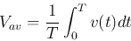
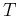
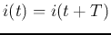
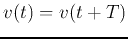
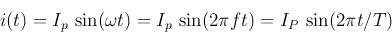
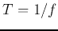
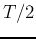
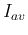
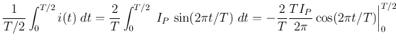
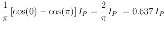

Next: The Effective or RMS
Up: averagevalue
Previous: averagevalue
The average voltage is defined as:

If the current/voltage is periodic, i.e., it repeats itself every
time cycle , then  and . The reciprocal
of is called the fundamental frequency. In particular, for
a sinusoidal current

the average over the complete cycle  is always zero (the charge
transferred during the first half is the opposite to that transferred
in the second). However, we can consider the half-cycle average over
:
|  |
 |
 |
|
| |
|
 |
|
Ruye Wang
2016-01-17